Popular service
Handyman services across metropolitan Perth
Handyman Services Perth for Home Repairs & Maintenance
The Ellis Perth office provides direct handyman services for home repairs and maintenance. Tell us the task and location; we assess the work on site and confirm the work plan and written quote.
Request a site assessment and quote
Urgent callouts: Ellis can arrange attendance in as little as 30 minutes. We provide 24-hour onsite service, subject to location, safe access and circumstances outside our control.
Read our Google reviewsPopular starting points
Local Handyman Services in Perth
Explore common home repair services, or search in your own words, then share your suburb or postcode with the request.
Popular service
Carpentry
Explore servicePopular service
Door repairs
Explore servicePopular service
Fly screen repairs
Explore servicePopular service
Window repairs
Explore servicePopular service
Minor tiling
Explore servicePopular service
House painting
Explore servicePopular service
Garden clean-up
Explore serviceDirect local service
How Our Handyman Team Works
Describe the property task
Search by the work you recognise and include a suburb or postcode.
Confirm the job
Ellis confirms the assessment appointment and access directly, then checks the affected items on site.
Work directly with our local team
Our local handyman and maintenance team explains the repair plan and written quote before you approve work. Our own appropriately licensed personnel complete any regulated tasks within the agreed scope.
For property decision-makers
Home Maintenance To-Do List for Property Managers
Use this home maintenance to-do list to record who can approve repairs, how Ellis can enter the property and the spending limit for each address. Our Perth office works directly with the property contact to confirm the job details and next step.
Read the property manager guide →Perth service areas
Find Local Handyman Service Areas
Browse the nine regions and choose the repair service you need.
Recent projects
Home Repair & Maintenance Projects
Explore photographed examples of home repairs and maintenance, with Scope and Outcome notes on each page.
Gutter cleaning & roofline maintenance
Blocked gutter cleaning and roofline
Explore a photo-led example of gutter cleaning, roofline maintenance and finished drainage details.
For similar work, explore gutter cleaning and repairs and our seasonal maintenance guide.
View project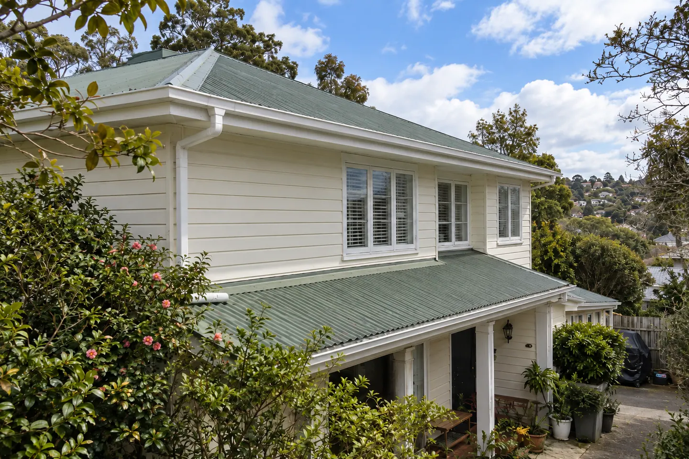
Timber Door Repairs and Repainting
Timber Door Repairs and Repainting
See our timber door repairs and repainting, with window sill repairs and opening hardware replacement on the same job.
View project
Shower resealing & tile grout repair
Shower silicone and tile grout repair
Explore a photo-led example of worn shower details, surface repair work and finished tile presentation.
View project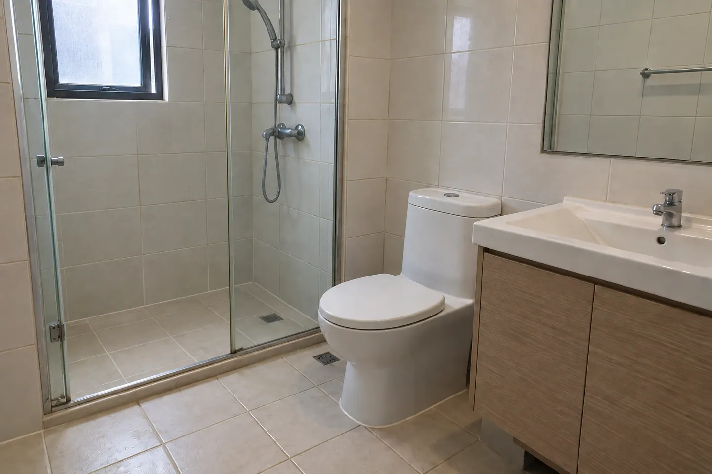
Garden clean-up & maintenance odd jobs
Garden tidy-up and maintenance
Explore a photo-led example of clearing, pruning and a tidier outdoor area.
View project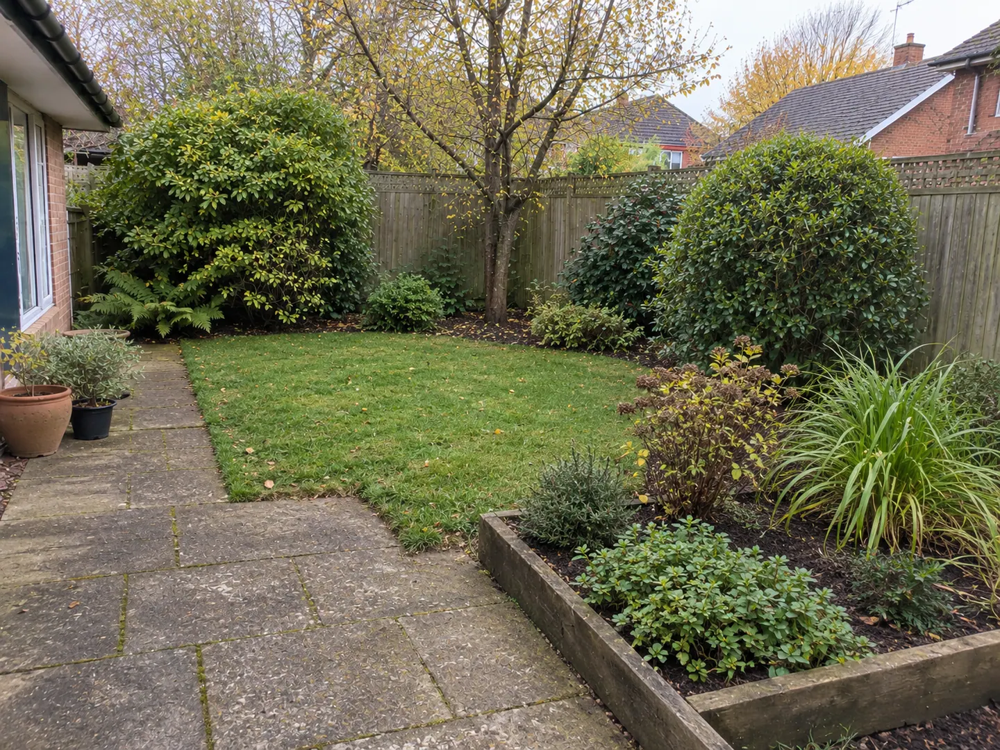
Interior wall repair & painting touch-ups
Wall repair and painting touch-up
Explore a photo-led example of visible wall damage, surface preparation and a refreshed room.
View project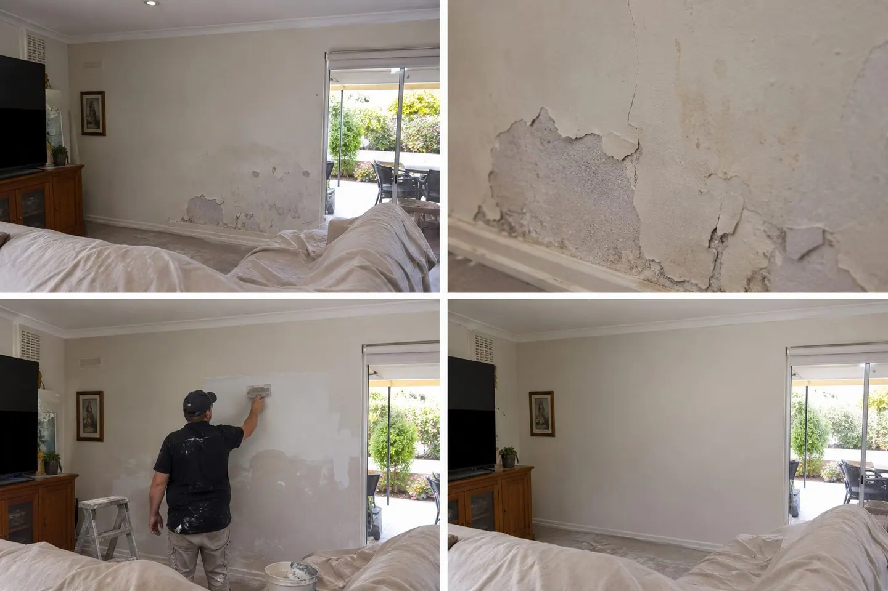
Torn flyscreen mesh repair & remeshing
Ordinary flyscreen remeshing
Explore a photo-led example of torn mesh, repair work and an ordinary remeshed screen door.
View project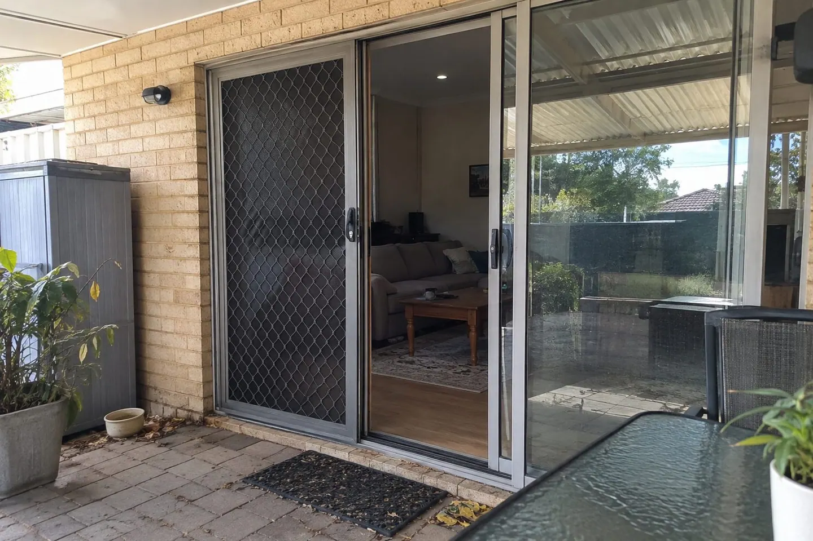
Damaged timber fence panel & post repair
Fence panel and post repair
Explore a photo-led example of damaged fencing, repair work and a stable fence line.
View project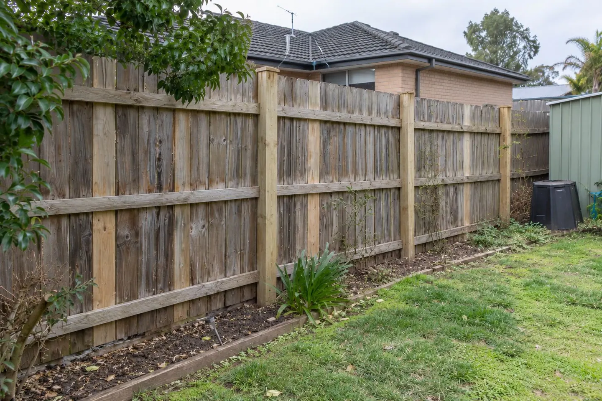
Deck timber maintenance & refinishing
Deck timber maintenance examples
These images are examples from different decking settings, covering preparation, coating and finished outdoor timber surfaces.
View examples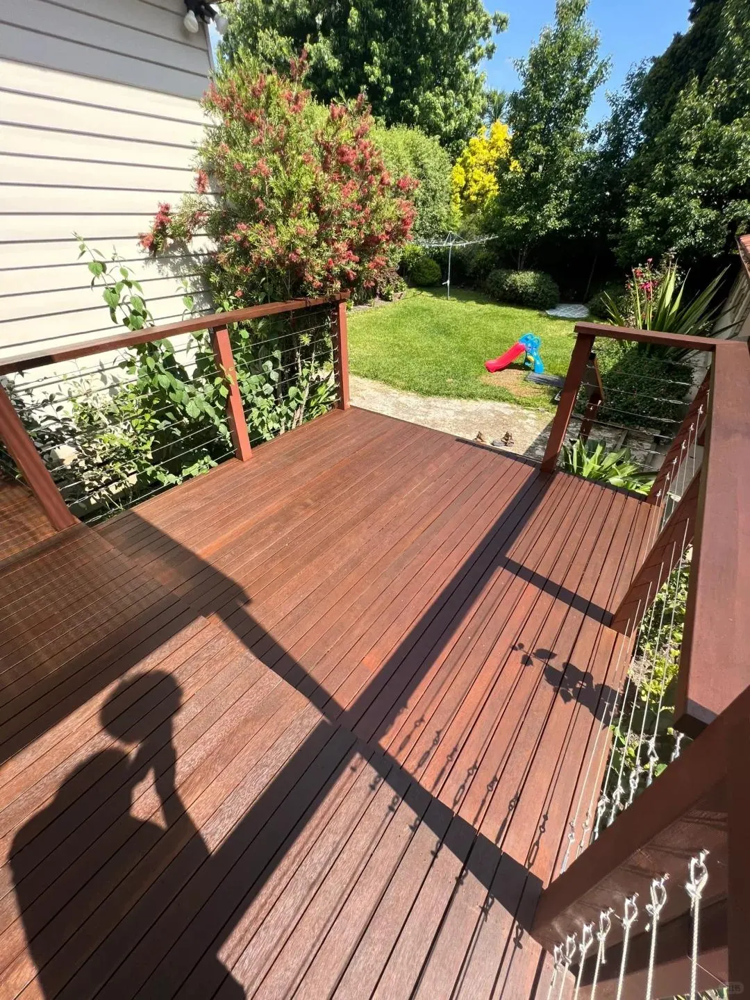
Door hardware replacement & smart lock fitting
Door hardware fitting example
Explore a door-hardware example showing removed components, fitting work and smart-lock details.
View example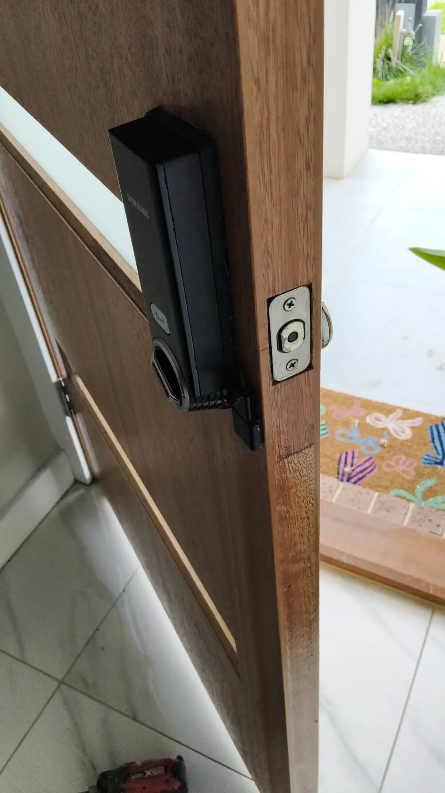
Cupboard hinge pulled-out repair & cabinet door alignment
Cupboard hinge and cabinet alignment
Explore the repair sequence, including the cabinet-door concern, hinge detail, adjustment work and final alignment.
View project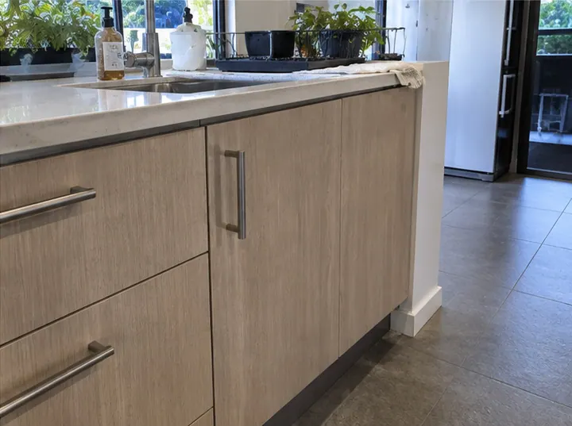
Canning region
Clothesline Bracket Repair in Canning
A damaged bracket on an existing clothesline was repaired and restored in the Canning region. The sequence shows the existing unit, work at its mounting and its final position.
Explore clothesline repairs & installation and outdoor maintenance planning.
View example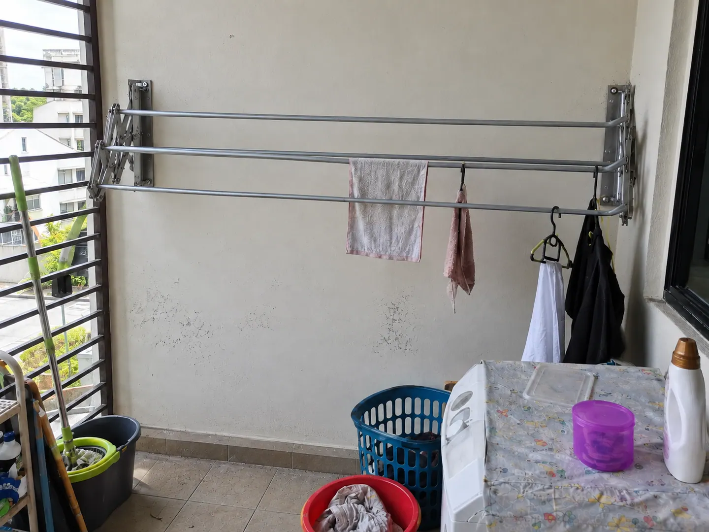
Cockburn region
Shelf Installation in Cockburn
New shelves were installed above existing furniture in the Cockburn region. These photographs show the wall before installation, visible work at the shelf supports and the two shelves in place.
Explore shelving, mirror & picture hanging and describing an installation request.
View example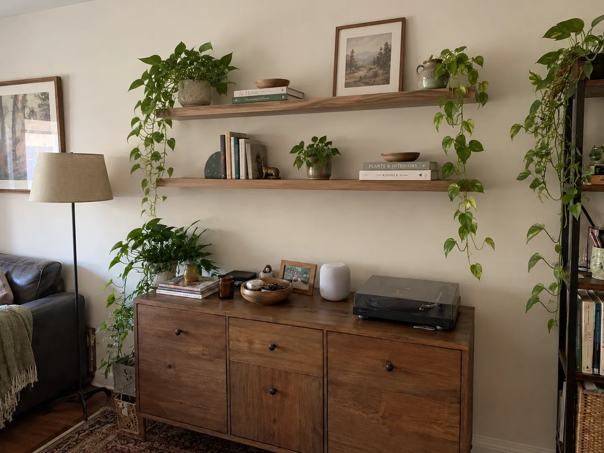
Southern Corridor region
Drawer Runner Replacement in the Southern Corridor
Damaged drawer runners were replaced in the Southern Corridor region. The before and after photographs show the affected drawer and its presentation after the confirmed runner replacement.
Explore cabinet & wardrobe repairs and cupboard hinge and drawer runner advice.
View example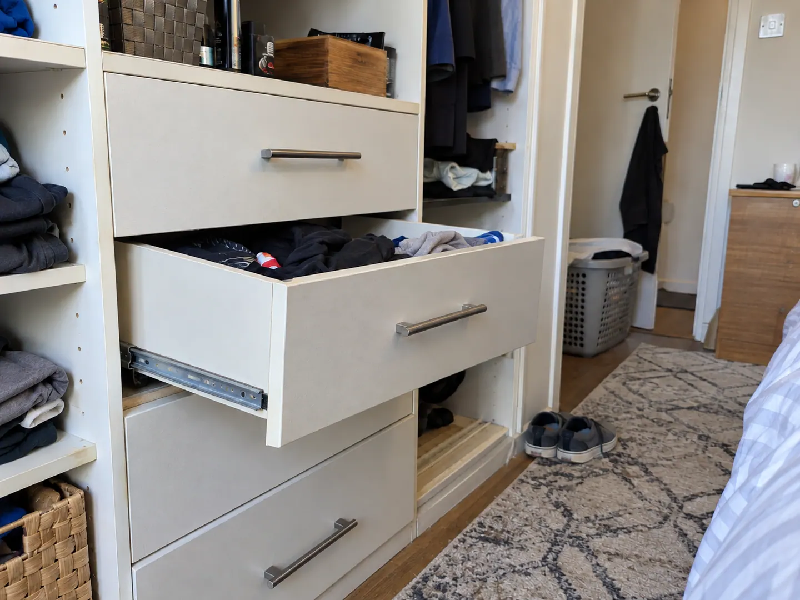
Guides & Advice
Home Maintenance Guides & Advice
A List of Small Home Repairs: Choosing a Handyman
Turn several small faults into a clear brief and match each task to the right capability.
Damaged Cabinet under a Leaking Sink: Handyman or Licensed Trade?
Separate the visible repair from plumbing, electrical and other task-specific requirements.
Moving In with Flat-pack Furniture: Handyman Quotes
Bring furniture models, missing-part notes and a mixed repair list into a comparable written scope.
Cupboard Door off Its Hinge: Cabinet Repairs
Separate a worn hinge or runner from damaged cabinet panels before choosing parts or replacing the unit.
Door Rubbing after New Carpet: Door Repair Guide
Compare floor clearance, hinges, swollen timber and dragging sliding-door hardware before selecting a repair.
Door Handle Hole in a Wall: Gyprock Repairs
Understand backing, recurring cracks and paint differences before combining a wall patch with its finish.
Shower Leaking after New Silicone: Repair Guide
Distinguish surface joints and grout from deeper wet-area faults before repeating a cosmetic reseal.
Curtain Rod Pulled from the Wall: Describing a Repair
Describe loose supports and damaged surfaces clearly, with or without safe existing photographs.
Repairs before an Open Home: Property Priorities
Prioritise safety, active damage and useful function before presentation repairs or photography.
After Rain: A Seasonal Home Maintenance Checklist
Track weather-related changes and distinguish routine upkeep from drainage, timber or structural repairs.
Repairs after a Rental Inspection: Maintenance Guide
Coordinate a mixed inspection or vacate list from tenant report to permission, access and handover.
Small Repairs in a Unit or Apartment: Finding a Handyman Near You
Use your suburb, repair details and building access to confirm the right local assessment.
Start with one request
Tell us what needs attention
Share the task and location to start your service request.
Perth office
Visit our Perth office
140 St Georges TerracePerth WA 6000
Planning to visit? Please contact our team first. You can use the map below to find our Perth office.
Open in Google Maps